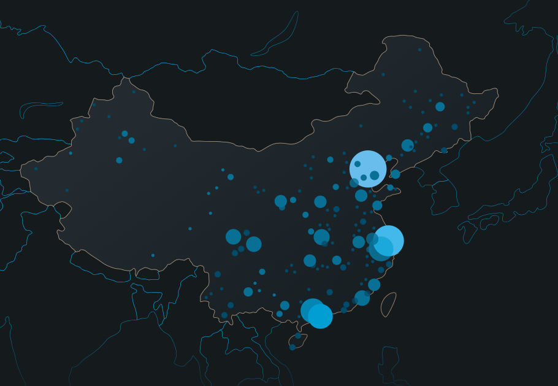

标签学习网站
菜鸟教程
W3C
一个刚开始学习H5笔记博客
菜鸟标签
H5新标签
标签事件️
绘制阴影等
山上 有
只 老虎
红鲤鱼绿鲤鱼与驴
一天
一年
一个月
阳光明媚
喊了一声....
标题
1111111111
222222222
3333333333
44444444444
55555555555
666666666666
这是第一段
这是第二段
这是一个加粗文本
文字从左到右
文字从右到左
文字从右到左
He named his car The lightning, because it was very fast.
西红柿炒番茄 💰99 只要💰9.9!
大白菜 10元 一斤，萝卜12元 一斤。
111111
22222
表格练习
Written by Jon Doe.
Visit us at:
Example.com
Box 564, Disneyland
USA
世界上最大飞机首飞成功
世界上最大的飞机——“平流层发射”（Stratolaunch），于当地时间13日在美国加利福尼亚的莫哈韦沙漠完成了首次试飞，首航飞行持续150分钟，之后顺利降落。

这架六引擎、双机身的飞机重达50万磅（约226.8吨），翼展385英尺（约117米），它的终极目标是运载火箭，然后将卫星送入太空。
据《卫报》，美国太空运输公司“平流层发射系统”（Stratolaunch Systems）潜心研发这一庞然大物已经8年。该公司CEO弗洛伊德（Jean Floyd）在首飞后的新闻发布会上说：“我们终于做到了，看着这只鸟飞起来，是一个激动人心的时刻。”
中国猿分布图

百度
aaa
bbb
ccc
6666
1111
2222
3333
video
河南省
这是一个空链接
空链接第二种写法
_balnk：重新生成新的标签页 再 打开页面。
_self: 直接在当前标签页 打开页面。
baidu
baidu
崔永元
范冰冰
冯晓刚
古人云：人终有一死

1️⃣ 块级标签(块属性标签)
特征：
a 支持宽高设置,并且设置宽高之后,仍支持独占一行
b 支持 上下 padding 和 上下 margin
2️⃣ 行级标签(行属性标签)
特征:
a 行级标签,在同一行展示。
b 不支持宽高设置,宽高由自身内容撑开。
c 不支持 上下 padding。
---------------------
！
返回顶部